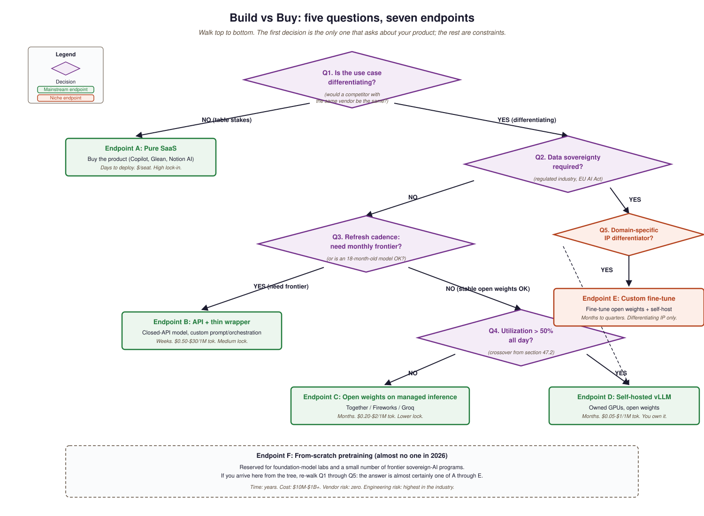

The build-vs-buy decision for LLM projects has more layers than most other software categories. You can buy a complete product (Microsoft Copilot, Glean, Notion AI), license a vendor framework (LangChain Plus, LlamaIndex Cloud), call an API directly (OpenAI, Anthropic, Google), self-host an open model (Llama-4 in vLLM), or train your own from scratch. Each step toward "build" multiplies effort and reduces vendor risk; each step toward "buy" inverts the trade-off. Most organizations should sit closer to "buy" than they instinctively want to.
This section provides a decision framework: the five questions to answer before you start, the cost models that change the answer, and the specific vendor categories to evaluate. The right pattern in 2026 is rarely "build the whole stack"; it is "pick which layers to buy and which to build". This section names the layers.
60.2.1 Five questions before you start
- Is the use case differentiating, or table stakes? Build only what is differentiating. Buy table-stakes capability (e.g., a generic copilot for your office suite).
- What is the cost of an outage? If you cannot tolerate a vendor's 99.9% SLA, you need either redundancy across vendors (still a buy decision) or self-hosting (a build decision).
- Does your data require sovereignty? Regulated industries (healthcare, finance, defense) may not be able to send data to a third-party API. That pushes toward self-hosting or vendor private deployments (Azure OpenAI dedicated, Bedrock provisioned-throughput).
- What is the total cost of ownership at 1x, 10x, 100x scale? APIs win at small scale; self-hosting can win at large scale, but only with high utilization. Section 68.2's cost math is the input.
- How fast does the underlying model need to refresh? If you need the latest frontier model month-over-month, an API is the only realistic option. If a stable open-weight model from 18 months ago works fine, self-hosting is viable.
60.2.2 The vendor stack, layer by layer
- Foundation model: OpenAI, Anthropic, Google, or open-weight self-hosted.
- Inference runtime: managed (OpenAI / Anthropic / Bedrock / Vertex) or self-hosted (vLLM, Ollama, TGI).
- Orchestration framework: LangChain, LlamaIndex, Haystack, or build directly on top of the SDK.
- Vector store: Pinecone / Qdrant / Weaviate (managed) or FAISS / Chroma (open-source).
- Observability: LangSmith, Langfuse, Helicone, or DIY logging into Datadog / Grafana.
- End-user product: Microsoft Copilot, Glean, Writer, etc., or a product you build.

60.2.3 Comparing the build-vs-buy options
| Approach | Time to first deploy | Per-1M-token cost | Vendor risk | Best for |
|---|---|---|---|---|
| Pure SaaS (Copilot, Glean) | Days | $/seat (no per-token) | High lock-in | Standard internal use cases |
| API + thin wrapper | Weeks | \$0.50-\$30 | Medium vendor lock | Custom workflows, fast iteration |
| API + framework (LangChain etc.) | Weeks | \$0.50-\$30 | Medium (framework + model) | Multi-step orchestration |
| Open weights on managed inference | Months | \$0.20-\$2 | Lower (multi-host) | High volume, moderate complexity |
| Self-hosted vLLM on owned GPUs | Months | \$0.05-\$1 (utilization-dependent) | Lowest (you own it) | Sovereignty, very high volume |
| Custom fine-tune of open weights | Months to quarters | \$0.05-\$2 + training amortized | Lowest (with eval) | Differentiating IP or domain |
| From-scratch training | Years | Variable | Highest (engineering cost) | Almost no one in 2026 |
Self-hosted vLLM on a rented H100 is cheaper per token than an API only if you keep the GPU >50% busy. Below that threshold the API wins on cost. The right way to do the math: take your projected requests-per-second, multiply by your average tokens-per-request, multiply by your GPU throughput at the model size you need, and compare with current API pricing. Artificial Analysis publishes throughput numbers; Section 68.2 walks through the formula.
Some regulated workloads (EU healthcare, U.S. defense, financial trade-surveillance) cannot send data to a third-party API even with provider attestations. In those cases the "buy" option does not exist and self-hosting is the only path. Confirm regulatory constraints before you scope the project; discovering them late forces a complete redesign. The EU AI Act and equivalent national regulations are the principal 2026 sources of these constraints.
A 2026 mid-size company building an internal "ask our docs" assistant typically buys: foundation model from Anthropic, vector store from Pinecone, observability from LangSmith. It builds: the document-ingestion pipeline, the prompt templates, the access-control layer, the React frontend. The "build" effort focuses on what is differentiating (the company's content + its access model); the "buy" effort covers everything that is table stakes. Total time to ship: weeks, not quarters. Total team: 2-4 engineers, not 20.
60.2.4 What the decision repeats
The build-vs-buy decision is not made once; it repeats every quarter as the technology and the vendor landscape change. APIs that were too expensive in 2024 became viable in 2025 with Gemini Flash; vector stores that needed self-hosting in 2023 became managed-default in 2024. Re-evaluate the stack every two quarters; the right answer last time may not be the right answer now. Section 60.3 walks through the business-case math that anchors these decisions to ROI rather than vibes.